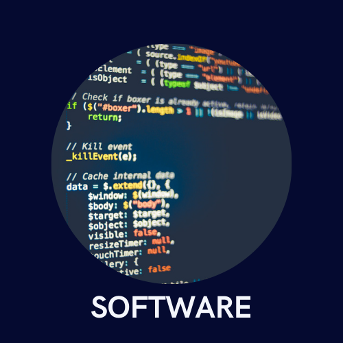
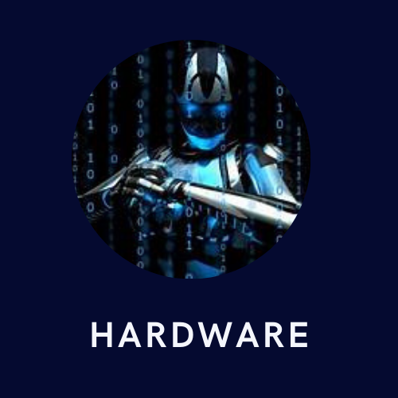
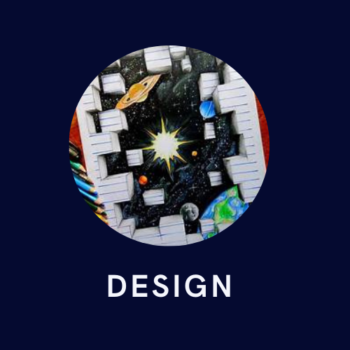
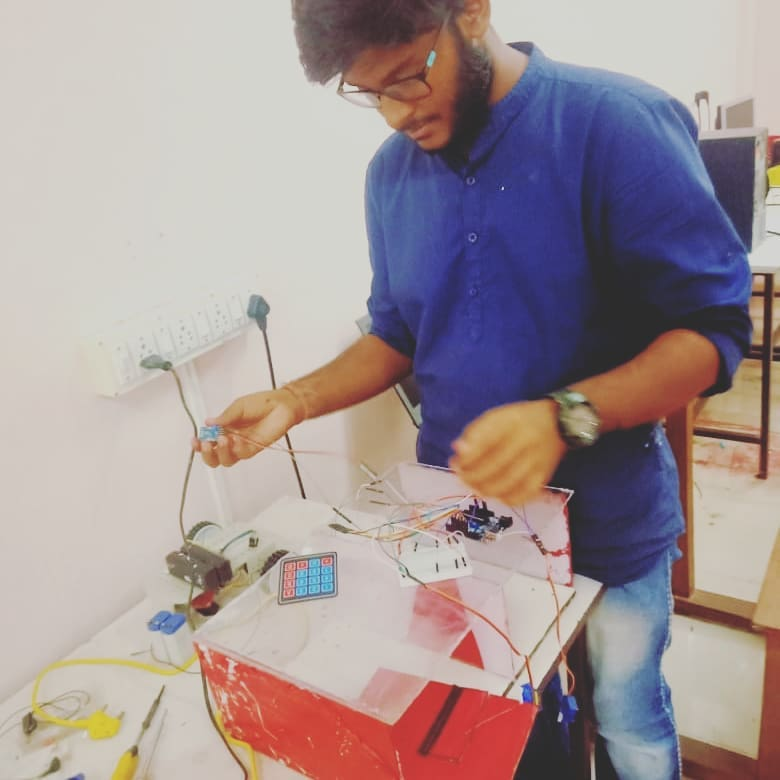
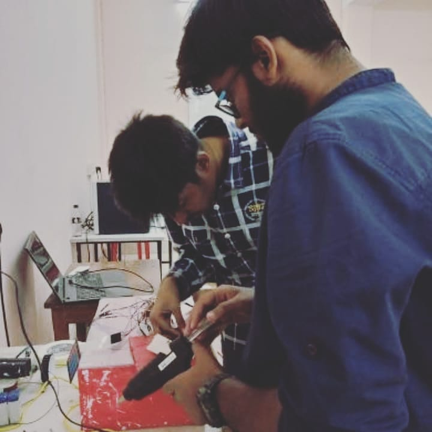
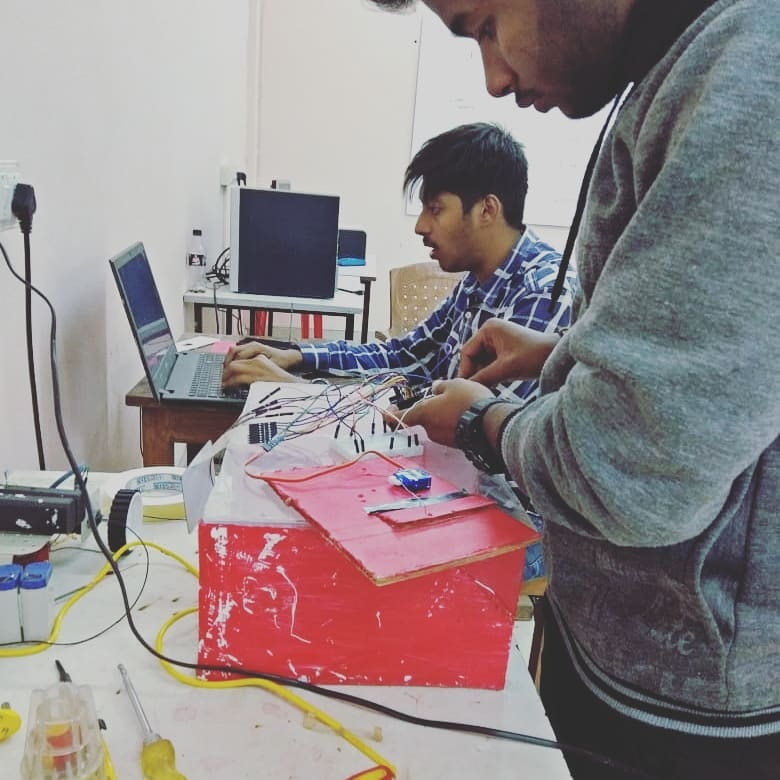

WELCOME TO SPECTRUM
 
SPECTRUM ,Technical society of COLLEGE OF ENGINEERING AND TECHNOLOGY, BHUBANESWAR,a place for all technical enthusiasts to learn, discover and innovate new things in the field of Technology and Design. The name of the club " SPECTRUM ", a contribution of our alumni of 2015 batch, is particularly used to describe the characteristic colors of visible light after passing through a prism, similarly students of CET consist of different skills within them and Spectrum acts like a prism, Spectrum recognises their skills helps them to strengthen it.
This club was established by " Bikram Keshari Panda (2015 batch) ".Spectrum got its recognition in the year 2016 and got its workspace, funding and other facilities. Primarily this was his idea to have an electronics society in our college but with the efforts of other members we established two other wings - Software and Design.The other seniors who had their valuable contribution for this initiative were: Ankit Mishra, Zighnesh Biswal, Abhishek Dash, Avinash Nayak, Tapan Kumar Pal, Krutikesh Sahoo, Abhilash Das.
Our club SPECTRUM is so named as it provides us with different wings emitted by the hardwork from our members, showing homologous transitions between Hardware, Software and Designing.
The HARDWARE team of the Club mainly focuses on VLSI, Embedded Systems and PCB Design. We have developed many projects with implementation and testing of circuits, components, systems, etc.
The SOFTWARE team is continuously striving for growth in the domains of Web Development, App Development, Competitive Programming, Machine Learning and Data Science. Working as a team, inspiring each other we quickly develop viable solutions for a better outcome.
The DESIGN Wing of our Club has proven their creativity in UI/UX Poster Designing. We believe visual communication is a major tool to enhance various creative projects.
  Device helps physically imapired people to understand the emotions of the person they are talking to.
A semi automated toilet that is designed for the elderly people and the patients. This toilet helps them defecate and urinate with ease and reduces the filthy labour for the hospital authorities. The use of embedded microcontroller Arduino Mega 2560 makes the system smart.
Robots help to deliver food and medicine aid in flood scenarios to the affected people in remote areas. Semi finalist at IIT bombay, Eyantra competition 2019-20.